title: "Jason Ma (Dyna): Reinforcement Learning for Real-World Production Robotic Systems" tags: - youtube - 연구자료 source: "https://www.youtube.com/watch?v=f8ckFlzGWGo" channel: "Zhanpeng He" video_id: "f8ckFlzGWGo" date: 2026-08-08
Jason Ma (Dyna): Reinforcement Learning for Real-World Production Robotic Systems
영상 정보
- 채널: Zhanpeng He (ICRA 2026 RL4IL 워크샵)
- 게시일: 2026-06-08
- 길이: 36분 08초
- 링크: https://www.youtube.com/watch?v=f8ckFlzGWGo
<div relative; width: 100%; padding-bottom: 56.25%; height: 0; overflow: hidden;"> <iframe absolute; top: 0; left: 0; width: 100%; height: 100%;" src="https://www.youtube.com/embed/f8ckFlzGWGo" frameborder="0" allowfullscreen></iframe> </div>
한줄 요약
Dyna Robotics 공동창업자가 실제 고객 사이트에 로봇을 배치하며 얻은 결론을 발표한다. 99.4% 성공률로 24시간에 냅킨 850장을 접는 데 쓰인 것은 정교한 RL 알고리즘이 아니라 보상 모델을 감독 도구로 쓴 human-in-the-loop 능동 학습이었고, "실세계 RL은 아직 프로덕션급 조작의 병목이 아니다"라는 도발적 주장으로 이어진다.
핵심 장면 분석
00:02:30 — 박사 연구: 로봇 학습을 위한 범용 보상 모델
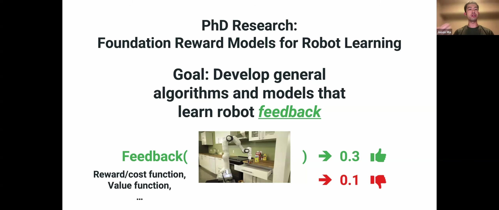
Ma의 연구 주제를 한 장으로 정의한다. 목표는 로봇 피드백을 학습하는 범용 알고리즘과 모델이다. 여기서 피드백이란 로봇과 세계 상태의 표현(예: 이미지)을 받아 "얼마나 잘하고 있는가"를 수치로 내놓는 보상·비용·가치 함수를 뜻한다. 슬라이드는 같은 장면에 0.3(좋음)과 0.1(나쁨)을 매기는 예로 이를 보여준다.00:03:20 — 두 갈래 접근
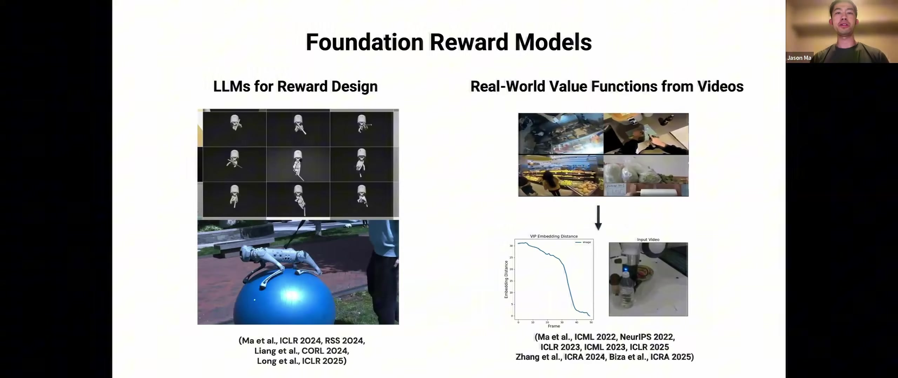
왼쪽은 LLM으로 보상 함수를 자동 작성해 sim-to-real RL을 돌리는 계열(Eureka 등), 오른쪽은 에고센트릭 비디오 같은 대규모 실세계 데이터에서 가치함수를 학습하는 계열이다. 이 발표는 두 번째 갈래를 프로덕션 규모로 확장한 이야기다.00:04:20 — VIP/LIV: 임베딩 거리가 곧 가치함수
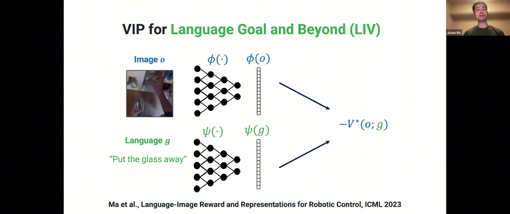
아이디어는 단순하다. 입력 이미지와 목표 이미지를 각각 임베딩해 잠재 공간에서의 거리를 가치함수로 삼는다. 언어 목표(ψ)도 같은 공간에 넣을 수 있어 "Put the glass away" 같은 지시로 과제를 지정할 수 있다. Ego4D로 학습한 이 모델은 훈련 중 본 적 없는 로봇 영상에 대해서도 합리적인 과제 진행도를 추정했다.00:06:10 — 보상 모델로 실세계 RL 감독
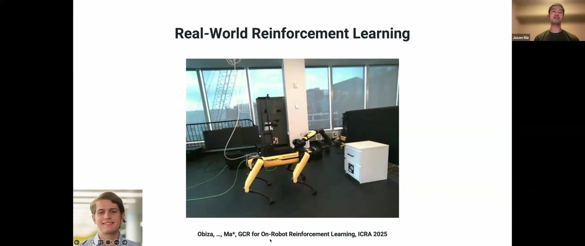
학습된 보상 모델의 직접적 응용. 서랍 열기를 처음부터 학습한 정책 사례를 보여주며, Ma는 "오늘날 기준으로는 상당히 비효율적"이라고 솔직하게 평가한다. 이 평가가 발표 후반의 주장으로 이어지는 복선이다.00:07:00 — 연구실에서 실세계로
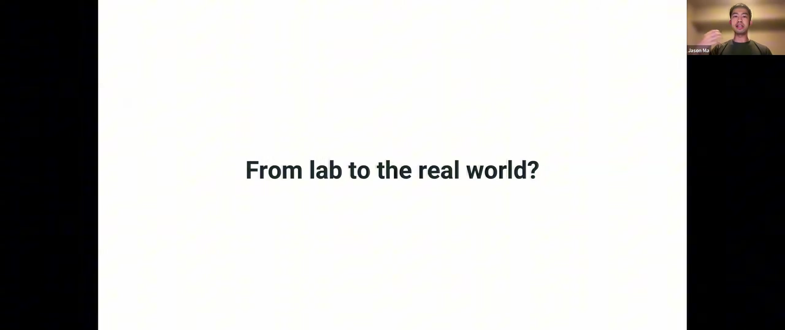
Dyna 창업의 동기. 연구실 환경에서 설득력 있는 결과를 낸 뒤 "이 아이디어를 실제 프로덕션 시스템으로 바꾸려면 무엇이 필요한가"를 물었다고 말한다. 실제 고객 사이트에 배치해야 가장 풍부한 피드백을 얻고, 학계 환경에서는 보이지 않는 격차가 드러난다는 것이 핵심 신념이다.00:07:50 — Sacramento의 실제 세탁소
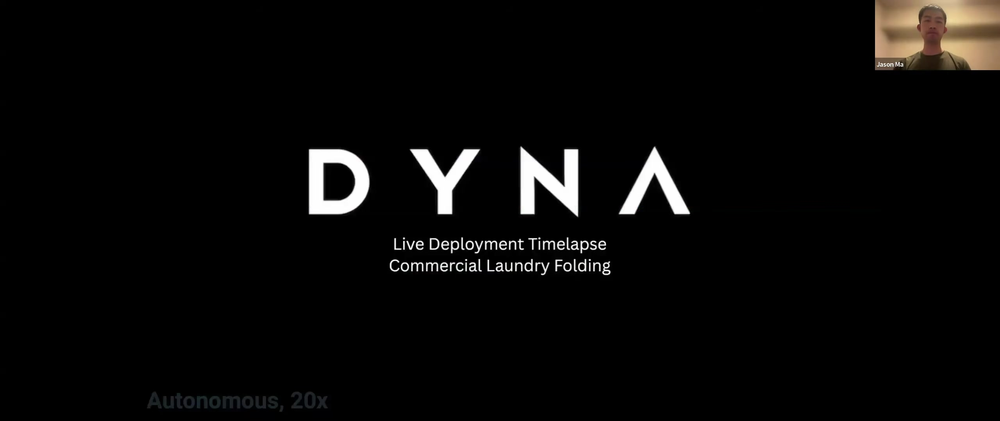
데모가 아니라 영업 중인 세탁소다. 로봇이 회색 수건을 실패 없이 연속으로 접어 단정하게 쌓고, 직원이 가져갈 수 있도록 옆에 놓는다(20배속).00:08:30 — Red Bull 협업: 도구 사용
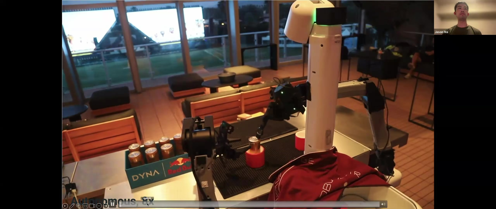
행사장에서 로봇이 도구를 써서 캔을 딴다. Ma는 자사의 차별점으로 범용성뿐 아니라 실수로부터의 회복과 도구 사용이 필요한 복잡한 과제 수행을 든다.00:09:10 — 학회 부스에서의 zero-shot 데모
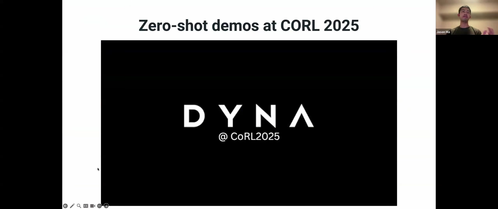
CoRL 2025 부스 영상. 참관객들이 다가와 로봇을 방해하고 티셔츠를 헝클어뜨리지만, 모델은 회복해 처음 보는 셔츠를 접는다. 통제된 환경이 아닌 곳에서의 강건성 시연이다.00:11:30 — 하나의 모델로 모든 과제의 진행도를 추정
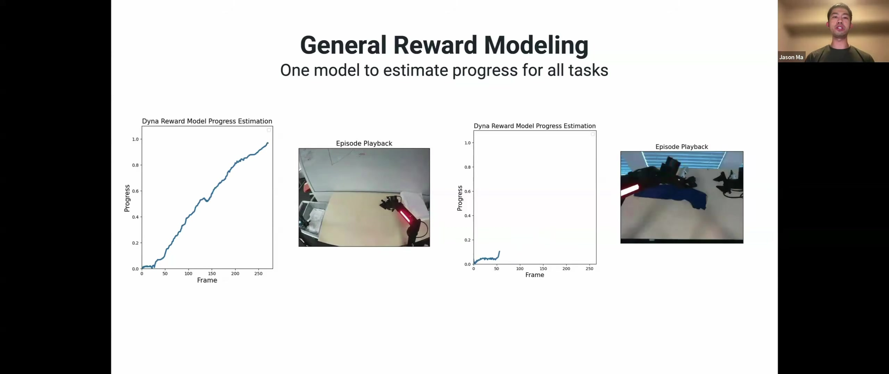
Dyna의 보상 모델은 박사 시절의 짧은 pick-and-place가 아니라 1분이 넘는 장기 과제(티셔츠·냅킨 접기)의 진행도를 정확히 추정한다. 각 그래프는 에피소드 재생과 나란히 놓여 진행도 곡선이 실제 동작과 일치함을 보인다.00:12:10 — 사례 연구: 냅킨 접기
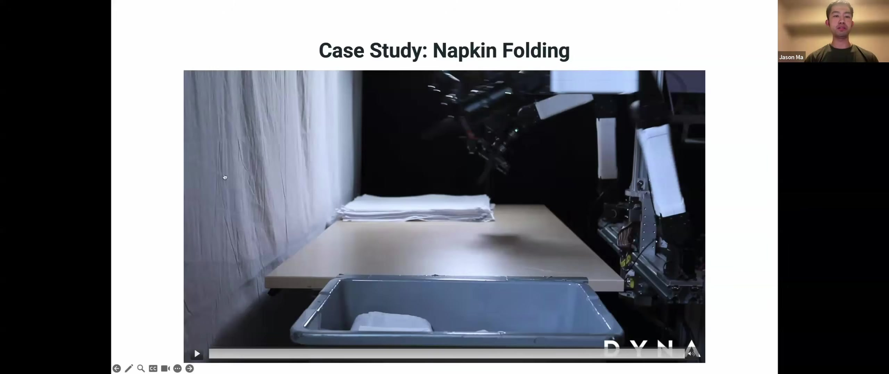
상업적 판단이 드러나는 대목이다. 범용 문제와 시스템 문제를 동시에 풀지 않기 위해 의도적으로 범위를 좁혀 레스토랑 냅킨 접기를 골랐다. 식당 뒷방에서 직원이 하루 수백 번 반복하는, 수요가 확실한 작업이다.00:13:50 — 24시간 신뢰성에 도달한 첫 정책, 그리고 그 한계
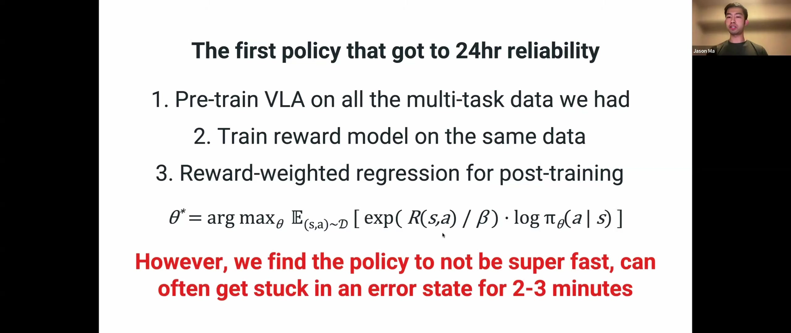
레시피는 세 단계다. ① 보유한 멀티태스크 데이터로 VLA 사전학습 ② 같은 데이터로 보상 모델 학습 ③ reward-weighted regression으로 post-training. 보상 모델이 냅킨 데이터셋의 상태-행동 전이에 점수를 매기고, 좋다고 판정된 샘플의 가중치를 올린다. 온라인 탐색이 전혀 없는 오프라인 RL이다. 붉은 글씨의 단서가 중요하다. 신뢰성은 확보했지만 느렸고, 에러 상태에서 2~3분씩 멈췄다. 상업적으로 쓰기엔 throughput이 부족했다.00:15:20 — Human-in-the-Loop 능동 학습
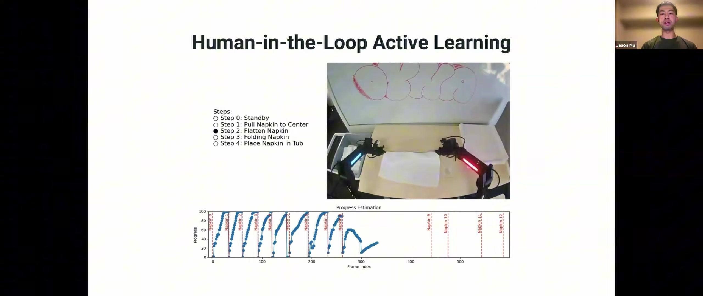
발표의 방법론적 핵심이다. 정책이 잘 돌 때는 진행도가 단조 증가하지만, 실수하거나 멈추면 그 패턴이 깨진다. 따라서 보상 모델을 정책과 나란히 실시간으로 돌리면 에러가 나는 지점을 즉시 포착할 수 있고, 데이터 수집 인력을 바로 그 어려운 사례에 투입할 수 있다. 백지 상태 탐색에 로봇 스테이션 시간을 쓰는 것보다 훨씬 효율적이라는 주장이다.00:16:40 — DYNA-1: 24시간에 850장, 99.4%
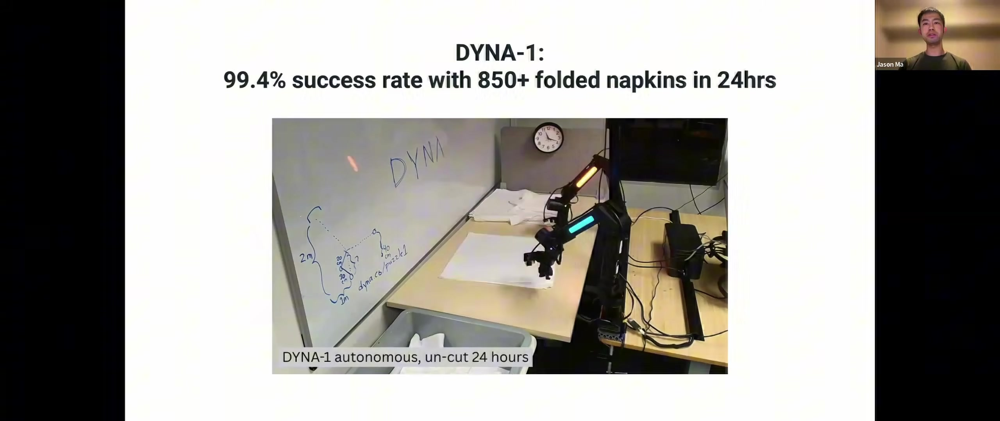
그 결과가 제품 릴리스로 이어졌다. 99.4% 성공률로 24시간 무중단, 냅킨 850장 이상. 발표 시점 기준으로 throughput은 여기서 다시 약 80% 향상되었고, 24시간 시험을 사무실에서 네 차례 반복해 매번 좋은 결과를 얻었다고 덧붙인다.00:17:30 — 학습하지 않은 실수에서도 회복
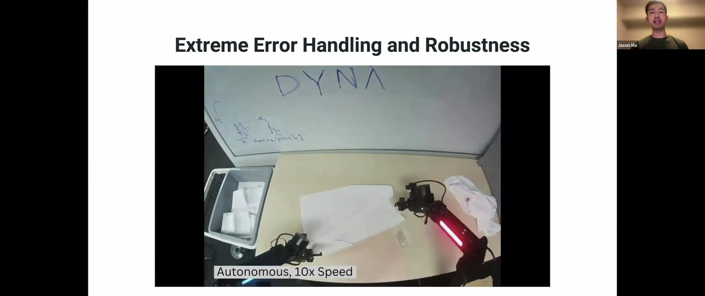
촬영 중 만난 최악의 상황. 로봇이 냅킨 더미 전체를 쓰러뜨렸는데 스스로 수습한다. 변형체 조작은 모든 실패 사례를 망라해 수집하는 것이 불가능한데, 능동 데이터 수집을 몇 라운드 돌린 것만으로 데이터셋에 없던 실수에 대해서도 회복 행동이 일반화되었다는 점을 Ma는 가장 놀라운 결과로 꼽는다.00:22:50 — 도발적 주장: RL이 필요한가
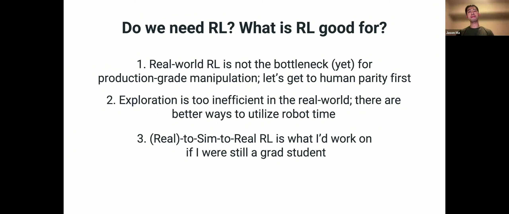
발표의 논쟁적 핵심이 세 항목으로 정리된다.- 실세계 RL은 프로덕션급 조작의 병목이 (아직) 아니다. 먼저 human parity에 도달하자. RL이 잘하는 것은 사람이 데모를 주기 어렵거나 초인적 성능이 필요한 문제(AlphaGo, AlphaFold)인데, 조작은 아직 사람 수준에도 못 미친다.
- 실세계 탐색은 너무 비효율적이다. 로봇 시간을 쓰는 더 나은 방법이 있다. 로봇 스테이션 8시간을 무작위 탐색에 쓸지, 사람 개입 기반 능동 학습에 쓸지의 선택 문제로 환원한다.
- 다시 대학원생이라면 (Real)-to-Sim-to-Real RL을 하겠다. sim-to-real은 보행에서 잘 작동함이 입증됐지만 조작에서는 아직이며, 실세계 데이터로 sim-to-real 과정 자체를 개선하는 방향이 유망하다고 본다.
Ma는 자사 경험을 근거로 든다. 실세계 RL이 해결해주리라 기대했던 문제들을 결국 더 나은 엔지니어링·사전학습·인프라로 해결했다.
00:23:30 — 모델 관측성이라는 시스템 문제
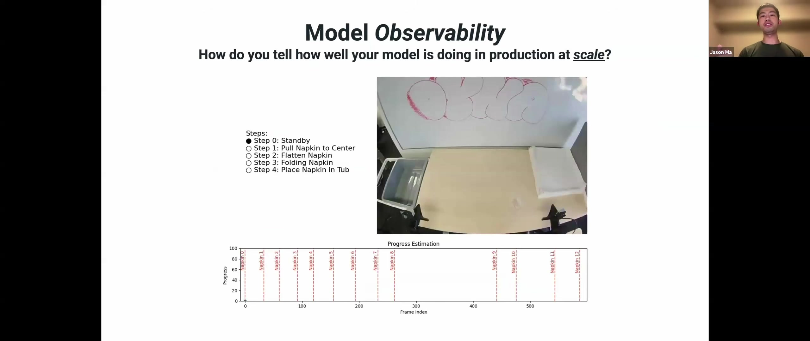
학계에서 거의 다루지 않는 실무 문제를 제기한다. 여러 고객 사이트에서 로봇이 대부분 자율로 돌아갈 때, 오늘 모델이 주문을 제대로 처리했는지 아니면 엔지니어가 들여다봐야 하는지를 어떻게 아는가. 보상 모델이 여기서 두 번째 역할을 얻는다.00:24:20 — 진행도 신호를 프로덕션 모니터링으로
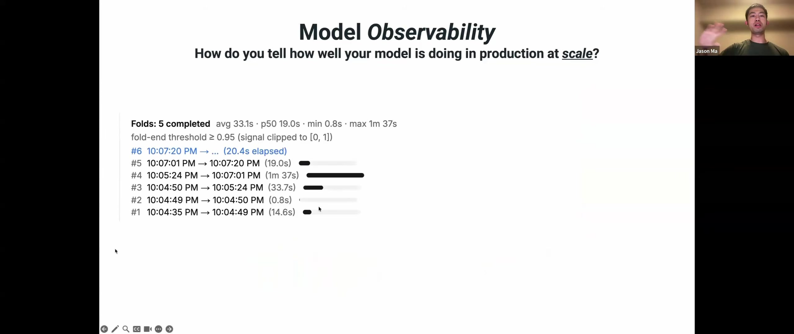
프로토타입을 실제 운영 시스템으로 만든 화면이다. 진행도가 0→1로 오르면 한 장을 접는 중이고, 0으로 돌아가면 새 작업이 시작된 것이므로 완료 시각을 자동으로 분절할 수 있다. 접기 완료 건수, 평균·중앙값 소요 시간 같은 통계가 그대로 나온다.00:25:40 — 이상치가 잡아낸 뜻밖의 장면
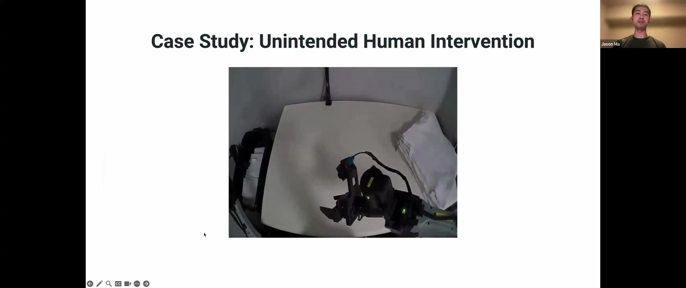
중앙값이 25초인데 14~15초짜리 이상치가 있었다. 해당 구간을 뽑아 보니 호기심 많은 식당 직원이 냅킨을 로봇 앞에 놓아준 것이었고, 진행도 모델은 이를 매우 빠른 성공으로 기록했다. 이 도구가 없으면 16시간 영상을 사람이 훑어야 한다.00:27:10 — 요약: 알고리즘보다 시스템
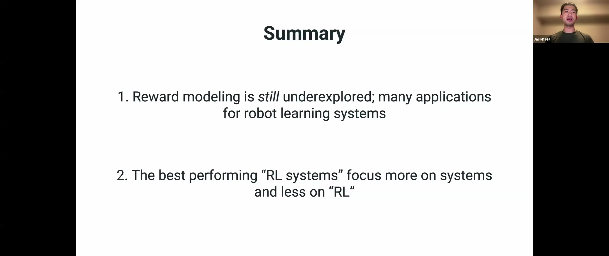
두 문장으로 끝맺는다. ① 보상 모델링은 여전히 과소탐구된 영역이며 로봇 학습 시스템에 응용처가 많다. ② 가장 성능이 좋은 "RL 시스템"은 RL보다 시스템에 더 집중한다. Ma는 이 두 번째 교훈이 로보틱스를 넘어 추론·코딩 등 오늘날 프론티어 RL 시스템 전반에 해당한다고 덧붙인다. RL을 돌리는 인프라가 어떤 RL 알고리즘을 쓰느냐보다 중요하다.주요 내용 요약
핵심 포인트
- 배치 기준선은 99.9%대다. 70~80% 성공률은 데모나 논문에는 충분하지만 실제 배치에는 못 미친다는 지적이 발표 전반의 전제다.
- 24시간 신뢰성을 만든 것은 오프라인 RL(RWR)이었지만, 상업성을 만든 것은 human-in-the-loop 능동 학습이었다. 전자는 신뢰성을, 후자는 throughput과 에러 회복을 담당했다.
- 보상 모델의 진정한 가치는 정책 학습이 아니라 "어디에 사람 시간을 쓸지" 결정하는 데 있었다. 진행도 곡선의 단조성이 깨지는 지점이 곧 데이터 수집 대상이다.
- 나중에는 시스템·하드웨어·기반 모델을 개선한 결과, 1시간 미만의 과제별 데이터와 표준 SFT만으로 더 나은 결과를 얻었다. RL 비중은 오히려 줄었다.
- 보상 모델은 학습 신호가 아니라 관측(observability) 도구로 재사용되었다. 이것이 이 발표에서 가장 이식성 높은 아이디어다.
- 같은 워크샵의 Finn 발표와 정면으로 대비된다. Finn은 RL 후속 학습으로 신뢰성을 끌어올렸고, Ma는 RL을 최소화하고 시스템으로 풀었다. 두 발표를 함께 읽어야 균형이 잡힌다.
기술적 내용
- VIP/LIV: 이미지 임베딩 φ(o)와 목표 임베딩(이미지 φ(g) 또는 언어 ψ(g))의 잠재 거리를 −V*(o;g)로 해석. Ego4D 등 대규모 인간 비디오로 학습해 로봇 도메인에 전이.
- GVL(VLM In-Context Progress Estimation): 사전학습 VLM(Gemini 1.5급)의 컨텍스트만으로 진행도 추정. 과제별·로봇별 학습 없이 동작하며, 데모를 컨텍스트에 더 넣을수록 정확도가 향상.
- Reward-Weighted Regression: θ\* = argmax_θ 𝔼₍ₛ,ₐ₎∼D [ exp(R(s,a)/β) · log π_θ(a|s) ]. 보상 모델이 매긴 점수로 샘플 가중치를 조절하는 오프라인 RL. 표준 VLA post-training과 형태가 거의 같다.
- Human-in-the-Loop Active Learning: 온라인 보상 모델이 진행도 이상을 감지 → 해당 상황에 데이터 수집 집중 → 재학습. 탐색 대신 사람 개입에 로봇 시간을 배분하는 전략.
- 모델 관측성: 진행도 0→1 사이클을 작업 완료 이벤트로 분절해 처리량 통계와 이상치 탐지를 자동화.
Q&A에서 나온 실무 정보
- 비용: 질문자는 고객이 시스템 전체를 5만 달러 이하로 기대한다고 전했다. Ma는 Dyna가 저가 양팔 암을 쓰고 자체 semi-humanoid를 개발 중이며, 5만 달러보다 상당히 낮은 가격대로 미국 사업체가 수용 가능한 수준이라고 답했다.
- 롱테일 사례를 능동적으로 찾는 법: 결국 최신 체크포인트를 돌려 실패를 유발해야 한다. 다만 진행도 추정이 함께 돌기 때문에 실패를 지켜볼 필요 없이, 예상보다 오래 걸린 구간만 사후에 뽑아 분석하면 된다. 장면을 능동적으로 교란해 실패를 유도하는 것도 방법이며, 반복하다 보면 모델이 어디서 실패할지 감이 생겨 탐색 주기가 짧아진다.
- 시뮬레이션 활용: 변형체 물리는 실세계와 차이가 크고 고충실도로 맞추면 속도가 급락한다. 이 과제에서는 시뮬레이터 튜닝보다 실세계 반복이 오히려 시간이 덜 든다고 판단했다.
- VLA에 보상 헤드를 함께 붙이는 것: 원리적으로 문제없고 진행도를 보조 신호로 쓰면 표현 학습에 도움이 된다. 다만 시스템 관점에서는 분리를 권한다. 정책은 계속 post-training으로 바뀌지만 진행도 추정까지 표류하면 모니터링 기준선이 흔들리기 때문이다.
시사점과 한계
한계
- 주장의 상당 부분이 한 회사의, 좁게 선택된 과제(냅킨·수건 접기) 경험에 근거한다. 발표자 스스로 "개인적 견해이자 hot take"라고 전제한다.
- "RL은 아직 병목이 아니다"는 명제는 현재 조작 성능이 사람 이하라는 조건에 붙어 있다. 사람 수준에 근접한 뒤에는 결론이 달라질 수 있음을 본인도 인정한다.
- 진행도 기반 관측성은 작업이 반복적이고 사이클이 뚜렷할 때 잘 작동한다. 사이클 경계가 모호한 작업에는 그대로 적용하기 어렵다.
- 학습 데이터에 없는 실수에서의 회복 일반화는 인상적이지만, 왜 그렇게 되는지에 대한 분석은 제시되지 않았다.
현장 적용 관점에서의 시사점
- 이 발표는 굴착기처럼 "현장에서 값을 받고 돌아야 하는" 목표에 가장 직접적으로 대응한다. 알고리즘 우위보다 배치 가능성을 기준으로 삼는 관점 자체가 참고할 만하다.
- 보상 모델을 관측 도구로 쓰는 아이디어는 중장비에 거의 그대로 이식 가능하다. 굴착·상차 사이클은 냅킨 접기보다 오히려 경계가 뚜렷해 진행도 0→1 분절이 자연스럽다. 사이클 타임 분포, 이상치 자동 추출, 원격 모니터링이 곧바로 KPI가 된다.
- "실세계 탐색 대신 개입 데이터" 전략은 숙련 오퍼레이터가 있는 건설 현장과 잘 맞는다. 안전 규정상 무작위 탐색이 애초에 불가능한 도메인이므로, 개입 기반 능동 학습이 현실적으로 유일한 선택지에 가깝다.
- 범위를 의도적으로 좁히라는 조언도 실무적이다. 범용 자율 굴착을 한 번에 겨냥하는 대신, 반복성이 높고 수요가 확실한 단일 공정(예: 정해진 적재 사이클)으로 좁히면 시스템 문제와 범용성 문제를 분리할 수 있다.
- 다만 비용 기준선(5만 달러) 논의는 테이블탑 양팔 로봇 기준이다. 중장비는 장비 단가 자체가 다르므로, 여기서 유효한 것은 절대 금액이 아니라 "고객이 수용 가능한 가격대를 먼저 확인하고 거기서 역산한다"는 접근이다.
관련 노트
- [[yt_Chelsea_Finn_Reliable_VLA_Post-Training_요약]] — 같은 워크샵. RL 후속 학습으로 신뢰성을 끌어올린 정반대 입장이라 함께 읽으면 대비가 뚜렷하다.
- [[yt_Sergey_Levine_RL_for_Robot_Foundation_Models_요약]] — 같은 워크샵의 기조 발표.